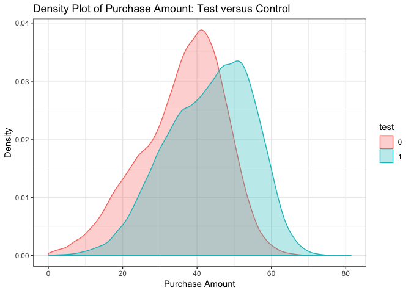

Ｒ實作分析
購物車按鍵影響購買因素分析



透過不同國家及裝置等多種資料進行分析，以不同兩組的購物車按鍵顏色做區分，討論購物車按鍵顏色是否會影響使用者購買商品，或是因為各國風俗名情的不同，或不同裝置下導致的購買行為不同，使用boxplot、線圖及曲面圖去做視覺化分析。
慢性腎臟病 (CKD) 與正常人的腸道菌相差異生物資訊分析

透過正常人與慢性腎臟病病人的腸道菌相檢體做分析，透過 16s ribosome RNA 定序後得到的 data，做clustering，得到的結果做OTU table (operational